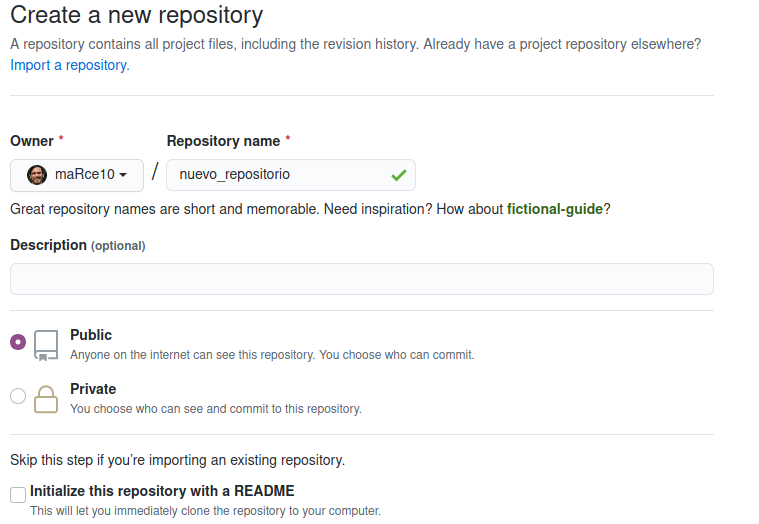
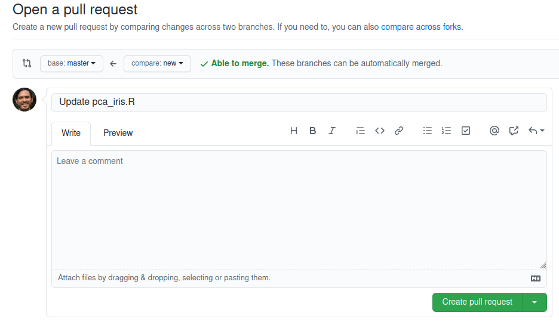
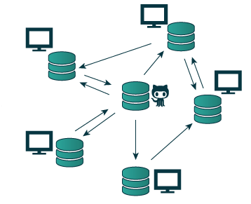

Git and GitHub are different but complementary tools for the development of programming projects or related work. Git is a computational version control tool that is used practically worldwide. GitHub can be described as the most popular online platform for hosting programming projects (i.e., code). However, this definition is simplistic: GitHub offers many other tools to facilitate collaboration and publication of programming-related projects.
Git → version control
Github → online repository
2 Git: Version Control
A version control system tracks the history of changes as people and teams collaborate on projects together. As the project evolves, teams can run tests, fix bugs, and contribute new code with the confidence that any version can be retrieved at any time.
Taken from Bryan 2018
Version control:
Keeps track of changes made
Facilitates collaborative work
Allows knowing who changed what and when
Allows reverting changes
Git does not need a permanent connection to a central repository and allows asynchronous work of collaborators.
2.1 Installing Git
2.1.1 Install Git on Linux
Git was originally developed on the Linux operating system. Therefore, it makes sense that it’s easier to set up to run on Linux. You can install Git on Linux via the package management tool that comes with your distribution:
Git packages are available using apt
It’s a good idea to ensure you’re running the latest version. To do this, navigate to the command prompt terminal and run the following command to ensure everything is up to date: sudo apt update
To install Git, run the following command: sudo apt install git-all
Once the command output is complete, you can check the installation by typing: git version
2.1.2 Install Git on Windows
Find the latest installer for Git for Windows and download the latest version
Once the installer has started, follow the instructions provided on the Git Setup Wizard screen until installation is complete
Open the Windows terminal or Git Bash
Type the git version to verify that Git is installed (git version)
Note: git-scm is recommended to download Git for Windows. The advantage of downloading Git from git-scm is that it uses the latest version of Git and includes Git Bash.
2.1.3 Install Git on macOS
Most versions of macOS have Git installed. However, if you don’t have Git installed, you can install the latest version of Git using one of these methods:
2.1.3.1 Install Git from an installer
Run git --version in the terminal, if it’s not installed yet you will be prompted to install it
Once the installer has started, follow the instructions provided until installation is complete
2.1.3.2 Install Git from Homebrew
Homebrew is a package manager for macOS. If you already have Homebrew installed, you can follow these steps to install Git:
Open a terminal window and install Git using the following command: brew install git
Once the command output is complete, you can verify the installation by typing: git --version
2.2 Using Git for Version Control
Git is typically used from a terminal (console where code is run). In Windows, it is recommended to use the gitbash console. In Unix-based operating systems (macOS and Linux), it can be used directly from the default terminal.
2.2.1 Steps
Set up your Git identity
Git uses a name and an email address to identify commits with an author (i.e., track which person is making which changes). Your Git identity is not the same as your GitHub account (we’ll talk about GitHub shortly), although both should use the same email address. Typically, you only need to set up your Git identity once per computer.
You can set your Git username like this:
Código
# define username in gitgit config --global user.name "Your name"
… and you can set the email like this:
Código
# define email in gitgit config --global user.email "your@email.com"
Create a local repository
Navigate to the folder where you want to keep the repository (cd) and initialize the local repository (git init):
Código
# example foldercd /path/to/my/repository# initialize local repositorygit init
git init initializes a new Git repository and begins tracking
an existing directory. It adds a hidden subfolder within the existing directory that houses the internal data structure needed for version control .
Add a new file
Create a new file. It can be an .R file or a README.md file describing the new repository (in this case, it’s just an example). Now we can use git status to check the current status of the project:
Código
# check statusgit status
Note: Git can track specific changes within a file when they are text files (non-binary files). For binary files, only the version history will be tracked.
Commit changes in Git
To start tracking a new file, you must use the following command:
Código
# start tracking a filegit add filename
You can also do it for all new files like this:
Código
# start tracking all new filesgit add .
Once you’ve started tracking file(s), you can commit the changes to the project’s version history:
Código
# commit changesgit commit -m "short but explanatory message here"
A common workflow is to edit files in your project, add the files you want to save using the git add command, and then commit the changes to the file using the git commit command. We can also use git status to check the project’s status.
Add branches
A clean way to make changes is to keep them on a parallel development line known as a “branch”
It’s also the safest way to work on different versions of a repository simultaneously
By default, the repository has a main branch considered the main version
We use branches to experiment and make edits before pushing them to the main branch
Branches can maintain independent versions of the project that can later be (or not) merged into the main branch
The following code creates a new branch and activates it:
Código
# add a branchgit checkout -b new_branch
Now we can make changes to the project without affecting the main branch. Once satisfied with the changes, they can be reintegrated into the main branch:
Código
# go back to the main branch git checkout master# merge new branchgit merge new_branch
… and delete the alternate branch:
Código
# delete branchgit branch -d new_branch
Additional Commands to Monitor Project Status in Git
git log: returns a history of commits
git reflog: allows visualizing recent changes such as additions, commits, and branch changes
git diff: allows visualizing specific changes in non-binary files (i.e., text files)
git reset: resets the main branch to a previous state
Use git --help to see a list of other useful commands for tracking/modifying histories
2.3 Using GitHub to Host Projects
GitHub is a platform for storing code, version control, and facilitating collaborations. It allows users to sort and save copies of code, as well as collaborate on projects related to programming remotely.
Go to (this address)[https://github.com/join] and click the “Create an account” button
Create a repository
In the top right corner, next to your identification icon, click “+” and then select “New repository”
Name the repository and write a brief description
Select “Initialize this repository with a README file” (optional but recommended)

Create a branch
Branches on GitHub are equivalent to those we create in Git and have the same function: running parallel versions of a project
Merge the secondary branch
To merge branches, a pull request must be made
The pull request is a way to alert the repository owner that you want to make some changes to their code
The request allows reviewing the code and making sure it looks good before including the changes in the main branch. Once reviewed, the owner can decide whether to accept or reject those changes (“merge”).
First, a pull request must be requested:

And after ensuring there are no conflicts, the alternate branch and the main branch can be merged:
2.4 Git + GitHub
Git-managed local repositories can be hosted and/or synchronized with remote repositories hosted on GitHub
This combination of tools is particularly useful for remote collaborations and for sharing code with the community

2.4.1 Steps
Clone the repository locally
This step is done using git on your computer
git clone creates a local copy of a project that already exists remotely
The clone includes all files, history, and branches of the project
We can use the course repository as an example: https://github.com/maRce10/curso_reproducible
First, copy the https address of the repository (https://github.com/maRce10/curso_reproducible.git)
# enter the foldercd ./curso_reproducible# initialize repository in gitgit init# set the repository addressgit remote add origin https://github.com/maRce10/curso_reproducible.git
Send pull requests to GitHub
Once you have worked on a project locally, these changes can be synchronized with the repository on GitHub
git pull updates the remote development line with updates from its local counterpart
The change must be tracked and committed to be synchronized
Código
## track new changesgit add .# commit changesgit commit -m "local change x"# send the first request to githubgit pull origin master# send subsequent changes to github git pull
Update local repository
If there are changes from your collaborators that have been synchronized with the repository on GitHub, they can be synchronized locally using git push
git push updates the local development line with updates from its remote counterpart
Código
# synchronize remote changes the first timegit push origin master# synchronize remote changes git push
Make changes locally (e.g., add a text file) and send these changes to GitHub
2.6 References
Bryan, J. (2018). Excuse Me, Do You Have a Moment to Talk About Version Control? American Statistician, 72(1), 20–27. https://doi.org/10.1080/00031305.2017.1399928 ```
Ejecutar el código
---title: Introduction to Git and GitHub---```{r, echo = FALSE}# devtools::install_github("hadley/emo")library("emo")library("xaringanExtra")library("knitr")# options to customize chunk outputsknitr::opts_chunk$set( tidy.opts = list(width.cutoff = 65), tidy = TRUE, message = FALSE )# this is a customized printing style data frames # screws up tibble functiontibble <- function(x, ...) { x <- kbl(x, digits=4, align= 'c', row.names = FALSE) x <- kable_styling(x, position ="center", full_width = FALSE, bootstrap_options = c("striped", "hover", "condensed", "responsive")) asis_output(x)}registerS3method("knit_print", "data.frame", tibble)```## Git and GitHubGit and [GitHub](github.com) are different but complementary tools for the development of programming projects or related work. Git is a computational version control tool that is used practically worldwide. [GitHub](github.com) can be described as the most popular online platform for hosting programming projects (i.e., code). However, this definition is simplistic: [GitHub](github.com) offers many other tools to facilitate collaboration and publication of programming-related projects.- Git → version control- Github → online repository<center><img src="./images/git-github.png" alt="git and github"/></center>------------------------------------------------------------------------## Git: Version ControlA **version control system tracks the history of changes** as people and teams collaborate on projects together. As the project evolves, teams can run tests, fix bugs, and contribute new code with the confidence that any version can be retrieved at any time.<center><img src="./images/version_control.png" alt="version control" width="600"/></center><p style="font-size:11px">Taken from Bryan 2018</p>Version control:- Keeps track of changes made- Facilitates collaborative work- Allows knowing who changed what and when- Allows reverting changesGit does not need a permanent connection to a central repository and allows asynchronous work of collaborators.### Installing Git------------------------------------------------------------------------#### Install Git on LinuxGit was originally developed on the Linux operating system. Therefore, it makes sense that it's easier to set up to run on Linux. You can install Git on Linux via the package management tool that comes with your distribution:- Git packages are available using `apt`- It's a good idea to ensure you're running the latest version. To do this, navigate to the command prompt terminal and run the following command to ensure everything is up to date: `sudo apt update`- To install Git, run the following command: `sudo apt install git-all`- Once the command output is complete, you can check the installation by typing: `git version`------------------------------------------------------------------------#### Install Git on Windows- Find the latest installer for [Git for Windows](https://gitforwindows.org/) and download the latest version- Once the installer has started, follow the instructions provided on the Git Setup Wizard screen until installation is complete- Open the Windows terminal or Git Bash- Type the git version to verify that Git is installed (`git version`)::: {.alert .alert-warning}*Note: git-scm is recommended to download Git for Windows. The advantage of downloading Git from git-scm is that it uses the latest version of Git and includes Git Bash.*:::------------------------------------------------------------------------#### Install Git on macOSMost versions of macOS have Git installed. However, if you don't have Git installed, you can install the latest version of Git using one of these methods:##### Install Git from an installer- Run `git --version` in the terminal, if it's not installed yet you will be prompted to install it- Once the installer has started, follow the instructions provided until installation is complete##### Install Git from HomebrewHomebrew is a package manager for macOS. If you already have Homebrew installed, you can follow these steps to install Git:- Open a terminal window and install Git using the following command: `brew install git`- Once the command output is complete, you can verify the installation by typing: `git --version`------------------------------------------------------------------------### Using Git for Version ControlGit is typically used from a terminal (console where code is run). In Windows, it is recommended to use the gitbash console. In Unix-based operating systems (macOS and Linux), it can be used directly from the default terminal.#### Steps1. **Set up your Git identity**Git uses a name and an email address to identify commits with an author (i.e., track which person is making which changes). Your Git identity is not the same as your [GitHub](github.com) account (we'll talk about [GitHub](github.com) shortly), although both should use the same email address. Typically, you only need to set up your Git identity once per computer.You can set your Git username like this:```{r, eval = FALSE}# define username in gitgit config --global user.name "Your name"```... and you can set the email like this:```{r, eval = FALSE}# define email in gitgit config --global user.email "your@email.com"```2. **Create a local repository**Navigate to the folder where you want to keep the repository (`cd`) and initialize the local repository (`git init`):```{r, eval = FALSE}# example foldercd /path/to/my/repository# initialize local repositorygit init````git init` initializes a new Git repository and begins trackingan existing directory. It adds a hidden subfolder within the existing directory that houses the internal data structure needed for version control .3. **Add a new file**Create a new file. It can be an .R file or a README.md file describing the new repository (in this case, it's just an example). Now we can use `git status` to check the current status of the project:```{r, eval = FALSE}# check statusgit status```::: {.alert .alert-warning}*Note: Git can track specific changes within a file when they are text files (non-binary files). For binary files, only the version history will be tracked.*:::4. **Commit changes in Git**To start tracking a new file, you must use the following command:```{r, eval = FALSE}# start tracking a filegit add filename```You can also do it for all new files like this:```{r, eval = FALSE}# start tracking all new filesgit add .```Once you've started tracking file(s), you can commit the changes to the project's version history:```{r, eval = FALSE}# commit changesgit commit -m "short but explanatory message here"```::: {.alert .alert-warning}*A common workflow is to edit files in your project, add the files you want to save using the `git add` command, and then commit the changes to the file using the `git commit` command. We can also use `git status` to check the project's status.*:::5. **Add branches**- A clean way to make changes is to keep them on a parallel development line known as a "branch"- It's also the safest way to work on different versions of a repository simultaneously- By default, the repository has a main branch considered the main version- We use branches to experiment and make edits before pushing them to the main branch- Branches can maintain independent versions of the project that can later be (or not) merged into the main branch<center><img src="./images/branching.png" alt="repository github branches" width="800"/></center>The following code creates a new branch and activates it:```{r, eval = FALSE}# add a branchgit checkout -b new_branch```Now we can make changes to the project without affecting the main branch. Once satisfied with the changes, they can be reintegrated into the main branch:```{r, eval = FALSE}# go back to the main branch git checkout master# merge new branchgit merge new_branch```... and delete the alternate branch:```{r, eval = FALSE}# delete branchgit branch -d new_branch```::: {.alert .alert-success}**Additional Commands to Monitor Project Status in Git**- `git log`: returns a history of commits- `git reflog`: allows visualizing recent changes such as additions, commits, and branch changes- `git diff`: allows visualizing specific changes in non-binary files (i.e., text files)- `git reset`: resets the main branch to a previous state- Use `git --help` to see a list of other useful commands for tracking/modifying histories:::------------------------------------------------------------------------### Using GitHub to Host Projects[GitHub](github.com) is a platform for storing code, version control, and facilitating collaborations. It allows users to sort and save copies of code, as well as collaborate on projects related to programming remotely.#### Steps1. **Create an account on [GitHub](github.com)**- Go to (this address)\[https://github.com/join\] and click the "Create an account" button2. **Create a repository**- In the top right corner, next to your identification icon, click "+" and then select "New repository"- Name the repository and write a brief description- Select "Initialize this repository with a README file" (optional but recommended)<center><img src="./images/create-new-repo.png" alt="new github repository" width="700"/></center>3. **Create a branch**- Branches on [GitHub](github.com) are equivalent to those we create in Git and have the same function: running parallel versions of a project<center><img src="./images/new-branch.png" alt="repository github branches" width="400"/></center>4. **Merge the secondary branch**- To merge branches, a pull request must be made- The pull request is a way to alert the repository owner that you want to make some changes to their code- The request allows reviewing the code and making sure it looks good before including the changes in the main branch. Once reviewed, the owner can decide whether to accept or reject those changes ("merge").First, a pull request must be requested:<center><img src="./images/pullrequest.png" alt="pull request" width="700"/></center>And after ensuring there are no conflicts, the alternate branch and the main branch can be merged:<center><img src="./images/mergebutton.png" alt="pull request" width="700"/></center>### Git + GitHub- Git-managed local repositories can be hosted and/or synchronized with remote repositories hosted on [GitHub](github.com)- This combination of tools is particularly useful for remote collaborations and for sharing code with the community<center><img src="./images/distributed.png" alt="pull request" width="400"/></center>#### Steps1. **Clone the repository locally**- This step is done using git on your computer- `git clone` creates a local copy of a project that already exists remotely- The clone includes all files, history, and branches of the project- We can use the course repository as an example: https://github.com/maRce10/curso_reproducible- First, copy the https address of the repository (https://github.com/maRce10/curso_reproducible.git)<center><img src="./images/clone.png" alt="pull request" width="600"/></center>- And then run `git clone` locally:```{r, eval = FALSE}# clone remote repositorygit clone https://github.com/maRce10/curso_reproducible.git```2. **Set up the remote repository locally**```{r, eval = FALSE}# enter the foldercd ./curso_reproducible# initialize repository in gitgit init# set the repository addressgit remote add origin https://github.com/maRce10/curso_reproducible.git```3. **Send pull requests to GitHub**- Once you have worked on a project locally, these changes can be synchronized with the repository on [GitHub](github.com)- `git pull` updates the remote development line with updates from its local counterpart- The change must be tracked and committed to be synchronized```{r, eval = FALSE}## track new changesgit add .# commit changesgit commit -m "local change x"# send the first request to githubgit pull origin master# send subsequent changes to github git pull```4. **Update local repository**- If there are changes from your collaborators that have been synchronized with the repository on [GitHub](github.com), they can be synchronized locally using `git push`- `git push` updates the local development line with updates from its remote counterpart```{r, eval = FALSE}# synchronize remote changes the first timegit push origin master# synchronize remote changes git push```::: {.alert .alert-info}### Exercise 1- In your [GitHub](github.com) account, create a new repository- Create a README file remotely (on [GitHub](github.com))- Clone the repository locally- Synchronize the local repository with [GitHub](github.com)- Make changes locally (e.g., add a text file) and send these changes to [GitHub](github.com):::------------------------------------------------------------------------### References- Bryan, J. (2018). Excuse Me, Do You Have a Moment to Talk About Version Control? American Statistician, 72(1), 20--27. https://doi.org/10.1080/00031305.2017.1399928 \`\`\`